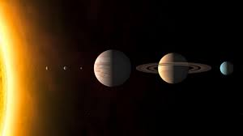

Welcome to Enggcolony.com
Image attributes:
Image with caption:
Developer Ashish
Server-side image:on click your clicking coordinates sent to server.
You can click on diff area of the image to see in detail:

Picture(Responsive):
A circle drawn by SVG:
Audio and Video is here: